解读《佛说父母恩重难报经》
冯冯
迷失在未来 、慈忍 / 誊录
其实，这是一部相当重要的佛经，是佛陀教育弟子做人最基本的道德和人生态度的一部宝典，字字珠玑，每一句都语重心长，无论是不是佛教信徒，都应该详细读此经来学习孝敬父母。
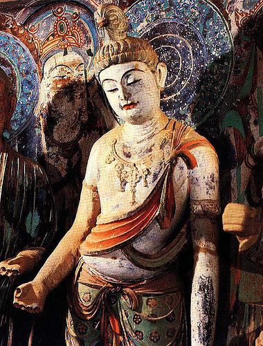《佛说父母恩重难报经》是一部被人忽略的佛经，很多人都不知道佛教有这一部经典，因为很少人在道场讲解这一部佛经，原因不太明白，可能是它没有使用什么高深的哲学，也没有使用什么精妙奥秘的“名相”吧！一般学佛的人并不认为这是一部很重要的佛经，学者们往往因为它浅白简单而予以轻视。
有人说，信佛的人，尤其是出了家，四大皆空，割亲断爱，父母妻子全都不要了；皈依了佛，就一心向佛，只知有佛，哪有什么亲情？哪里要孝敬？
那都是对于佛教的一知半解，并未真正明了佛陀的原本教训，这同时也是自古以来，历代对于“割亲断爱”四个字的误解。其实，割的“亲”与断的“爱”，都不是指父母的天伦之“亲”，而是指欲爱之亲。当然，要断的爱，也不是指天伦之爱、友爱，无缘大慈、同体大悲的慈悲博爱。很不幸地，古今很多人误解了佛教本义，竟以为学佛就连父母也不要了，连妻子亲人也不要了。
其实，佛经本本都载有各种生灵偕同眷属来听佛陀说法，可见佛陀并未叫人抛弃父母亲眷。相反地，佛陀鼓励弟子接引亲眷来一同学法，一同修行，同证涅槃。
佛陀非但没有教人抛弃父母，他反而说了一部《佛说父母恩重难报经》来教训弟子孝敬父母。这部佛经，被称为佛教的“孝经”，是完全教人感恩、孝敬和供养父母的。
这部《佛说父母恩重难报经》，是由姚秦三藏法师鸠摩罗什奉诏翻译成汉语的。一般学者相信是鸠摩罗什口译，由他的弟子记录下来。鸠摩罗什是西域的一位高僧，东晋时代从丝绸之路来到中原，受姚秦国国王的礼遇，他在中土弘法，口译了很多佛经，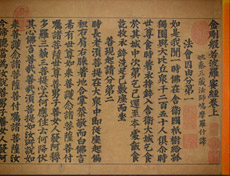包括至今仍在流行的《金刚经》，非常深入简明，比后世唐三藏玄奘法师所译的版本简单很多，不过也因此漏列了不少内容，不及唐译的完整。就经名而言，鸠摩罗什译为《金刚波罗蜜经》；唐三藏玄奘大法师译为《能断金刚波罗蜜经》。唐玄奘大师译的显然是比较正确详尽。不过，鸠摩罗什不懂汉文，无从得知其口译的内容，但他的译本较为精简，所以一直流传风行，掩盖了唐玄奘大师的完整详译版本，这些是本题之外了，另外再谈。 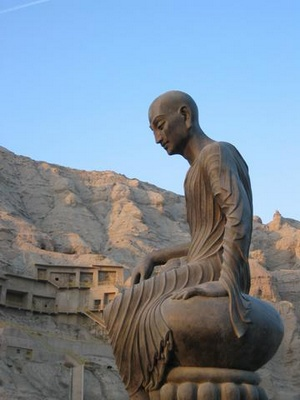
《佛说父母恩重难报经》倒是没发现另有译本，鸠摩罗什译本似乎是唯一的版本，所以我们还是采用他的译本，这是他奉了姚秦国国王的诏命而口译的，可见秦王很重视这本佛经，才叫他翻译来教育世人，鸠摩罗什是沙门，也敬奉此经，教人孝敬父母。后世的人，无论出家在家，实在也应该孝敬父母，千万别说什么“四大皆空”、“断亲割爱”的话自己走入歧途！成为不忠不孝、不仁不义之人。
出家也好，在家也好，要割断的是不正的邪念、欲念，要辞的是邪念之亲，并不是割断天伦、人伦，若要弘法度众生，就应也先度亲人成为“法眷”──就是佛法的眷属，不能说去度众生，却抛弃自己的天伦与眷属，厚此薄彼，这不是佛法的平等法。
要修行，首先要自净其意，实践八正道，守五戒，除去贪嗔痴三毒，这是人所周知的，但是很少人注意到，孝敬父母，供养父母，乃是百善之首，百善之先。经云：“万恶淫为首，百善孝为先。”要从无私无我的真诚孝行开始，才更容易踏上修行之途。
现在我们来研读《佛说父母恩重难报经》，我们先引一段由鸠摩罗什译成的汉语原文，然后把它用现代白话语体解释。由于现代人生活紧张忙碌，未必人人都看得懂先晋时代的中原古文，经中有些佛教名词，也不是人人懂得，我不自量力，就我所了解的，把这些都用白话文解释，仅供参考而已，解释若有错误，务请原谅及指正，无论如何，我并不是一个佛学的专家，请各方大德多多指正。
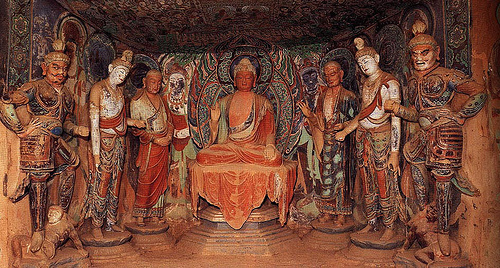
如是我闻：
一时，佛在舍卫国祗树给孤独园，与大比丘二千五百人，菩萨摩诃萨三万八千人俱。
尔时，世尊引领大众，直往南行，忽见路边聚骨一堆。尔时，如来向彼枯骨，五体投地，恭敬礼拜。
阿难合掌白言：“世尊，如来是三界大师，四生慈父，众人归敬，以何因缘，礼拜枯骨？”
佛陀并没有自己拿笔写下讲稿，在二千六百多年前，笔纸恐怕也还未普及吧？佛陀讲的语录都是弟子从记忆中传递下来，后来就由弟子做笔录流传下来，开头一句都是说：“如是我闻”，这是我这样听到的。“一时”，就是现代语讲故事的开头语：“从前，有一次……”，英文是“Once upon a time……”。
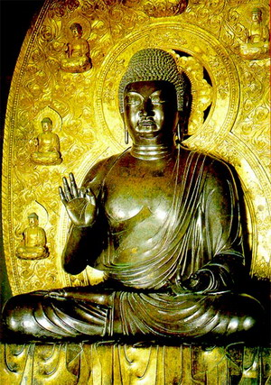 “佛在舍卫国”，佛就是佛陀释迦牟尼，其实佛陀自己从未自称是“佛”，“佛”似乎后世弟子尊称他的，“佛陀”本来的意义也只不过是“开悟的人”，并无特殊超凡神化之意义，把“佛”字看成超凡神化，是后世的尊敬逐步加添上去的。“佛陀”是巴利文音“BUDDHA”的音译，汉语原无“佛”字，是从音译而创造的“佛”字，是“佛陀”的简称，英文把“佛陀”（开悟的人）译为“THE ENLIGHTENED ONE”，亦并无“神格化”意义，把“佛”视为“神”是后世的错误。
舍卫国，是古代印度的许多邦国之一。那时候，差不多是一城一国。这个舍卫国，是在当时的中印度北部，现在已经不存在了，有人考据说可能是在现在的班那斯（BARNES）市区附近。舍卫国距离佛陀出生的地点蓝毗尼（LAMPINI）不远，这是当时佛陀经常说法的地方。
舍卫国有一位太子名叫祗陀，很发心维护佛陀说法，同时有一位富有的老人，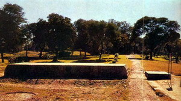人称“给孤独长者”，也是很发心护法，他说要用黄金铺地，要买下祗陀太子的园林来供养佛陀居住说法。太子被他的诚心所感动，就把园林捐出建设了一座道场，供养佛陀说法，这个地方就叫做“祗树给孤独园”，是把太子与老人两个人的名字连起来并称的，佛经常常看到这个地名，因为佛陀长住在那里说法，后世简称此地为“祗园”，把佛陀的修行居所成为“祗园精舍”。
比丘，巴利文指的是男性出家人，比丘尼是女性出家人，这都是译音，“菩萨”也是译音和简称，原音是巴利文转译成梵文，英文拼法是BODISATIVA，就是大觉有情，行大慈悲的修行者。《华严经》说须修行到达“十地”的程度，才可成为菩提萨埵。今世对于慈悲布施行慈悲道的人，都尊称为菩萨，已经近于滥称了。但是，也可以说，只要开悟，人人都可以成佛：只要慈悲，人人都是菩萨。
在佛陀说法时代，大概是称出家修行人为比丘与比丘尼，对于慈悲布施护法的在家人，尊称为菩萨。“摩诃萨”是尊敬的称号，原音是MAHASA，意思是“伟大的”之意。“俱”就是在一起。“五体投地”是最尊敬的礼拜方式，先立正、合掌、屈膝、下跪，然受以手承足，然受顶礼叩头，然后全身仆伏在地面，继续叩头，这种“五体投地”礼拜方式，现在仍然流行于西藏、尼泊尔一带，很多密宗信徒仍在使用这种方式拜佛像和师长，在显宗信徒当中是较为少用的，在西方的宗教，天主教和犹太教也仍然使用这种礼拜方式。
“世尊”是对佛陀的尊称，原音是巴利文为LUKANATHA，梵文为BHAGAUAT，本来的意义是“尊敬的老师”之意，中文加上尊崇之意，译为“世尊”，使它听来更加尊贵了。“如来”也是对佛陀的尊称之一，意思是说佛陀是乘“真如”大道而来的得到“正觉”者。
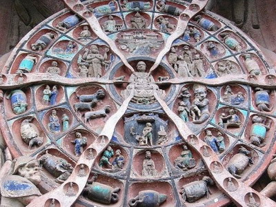 “三界”就是：“欲界”“色界” 与“无色界”。“色界” 就是指有形有相的物质宇宙，“欲界”就是只有欲望和因欲念而繁生的众生，人类、动植物都属于“欲界”，要饮寿酒吃蟠桃的神仙、会思想仍有男女欲念的那些神仙，虽在天上，其实也还是欲界生灵。希腊神话中的男女仙人，要恋爱、要饮酒、要到人间找爱情，这些也都是欲界的生灵而已，只不过是有些许所谓的神通吧？
“阿难”的巴利文名字原音是ANANDA，汉语译为阿难陀，他是佛陀的堂弟，是最早追随佛陀出家修行的弟子之一，最博爱强记，记忆力特别好，他能够把佛陀讲过的经文都背诵出来，最早的佛经，很多是由阿难尊者从记忆背诵出来的，由后来的弟子口口相传再进一步笔录下来。
“四生”，是指：卵生、胎生、湿生、化生。举例说：鸡生蛋，蛋孵化成小鸡，这是卵生。人类和哺乳动物都是胎生（澳洲的鸭嘴兽例外，它是生蛋的）。植物是湿生(但是细菌却不是湿生，草履虫也不是，它们是分裂而生）。化生是从“无”化为“有”，大概属于无机体吧！
名词简单地解释完了，现在我们可以把上面这一段经文一口气译成白话文现代语：
阿难尊者说：这是我听到的──
有一次，佛陀在舍卫国的祗树给孤独园，和两千五百位大和尚，三万八千位大菩萨在一起。
那时候世尊（佛陀）引领大众外出向南行走（可能是出去乞食化缘吧？那时候的佛徒，必须每天托钵乞食，作为消除我慢心的修行方式之一），忽然见到路旁有一堆枯骨（印度古今都是贫穷，路边常有饿死、病死的尸骨）。
那时候，佛陀就来向那堆枯骨行五体投地的最恭敬礼拜。
阿难就合掌请问：“世尊，您是已成正觉真如的，您是欲界、色界与无色界等三界一切生灵的老师，是卵生、胎生、湿生、化生等四种生态生灵的慈父，受到众人皈依礼敬的，可是由于什么缘故，您却去礼拜枯骨呢？”
阿难问得很有道理，可不是奇怪吗？老师为什么去向路边一堆私人枯骨礼拜呢？要想知道答案，就得看本经的下文。我们现在继续看经文原文的下面几段。
佛告阿难：“汝等虽是无上首弟子，出家日久，知事未广。此一堆枯骨，或是我前世祖先，多生父母。以是因缘，我今礼拜。”佛告阿难：“如今将此一堆枯骨分作二分，若是男骨，白色且重：若是女骨，色黑且轻。”
阿难白言：“世尊，男人在世，衫带鞋帽，装束严好，一望知为男子之身。女人在世，多涂脂粉，或熏兰麝，如是装束，即得知是女流之身。而今死后，白骨一般，教弟子等，如何认得？”
佛告阿难：“若是男子，在世之时，入补伽蓝，听经讲律，礼拜三宝，念佛名号；所以其骨，色白且重。世间女人，短于智力，易溺与情，生男育女，认为天职；每生一孩，赖乳养命，乳有血变，每孩饮母八斛四斗甚多白乳，所以憔悴，骨现黑色，其量亦轻。”
这几段文字很浅白，并没有什么特别专用名词，可以直接翻译成现代白话文如下；
佛陀告诉阿难说：“你们虽然是我的上首弟子，出家日子很久了，但是所知的事理还不够广博，这一堆枯骨，或许是我的前世祖先，或者是我的很多生以前的父母呢！所以我现在礼拜他。”
佛陀又告诉阿难：“你现在把这一堆白骨分开做两份，倘若是男子的骨呢？那是颜色白的，也比较重的。倘若是女子的骨呢？那是颜色重比较黑的，也比较轻的。”
阿难就说：“世尊，男子在世之时，衣服装束，有穿鞋、有戴帽子，比较讲究，一望就知是男子之身。女子在世呢？多数涂脂抹粉，或者熏喷香水，例如兰花、麝香之类，从她们这样的装饰，就知是女流之身。现在是死人白骨一堆，叫我们弟子怎样认得出它是男是女呢？”
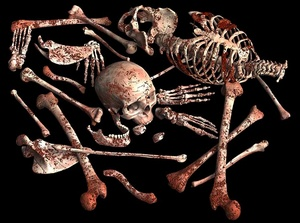 阿难真是问得好，可不是！死人白骨一堆，怎可以看得出是男是女？其实古代的中国与印度的验尸官都能分辨出尸骨是男或是女，现代的验尸专家更可以从医学解剖学来分辨它的，阿难没学过这一套学问，当然认不出了。
佛陀答覆阿难说：“倘若是男子，在世之时，到佛寺听讲经律，礼拜三宝，念佛名号，所以他的骨头颜色比较白也比较重。至于世间的女子，智力较低，容易沉溺于情爱，对于生儿育女，认为是天职；生一个孩子呢？喂自己的奶把孩子养活，母乳其实是由血变的呀！每一个孩子就要吸饮母亲的奶汁八斛四斗那么多，所以做母亲的女子憔悴了，骨头就变黑色，也轻了。”
关于这一段，有几个地方要解释一下，伽蓝是寺庙之意，这是译音。佛陀在世说法之时，并未自称为“佛陀”， 祂说得礼拜三宝就是佛、法、僧。我推想佛陀当时不会叫弟子去持念祂的名号，祂叫弟子持念的佛号，可能指阿弥陀佛或其他古佛佛号吧！
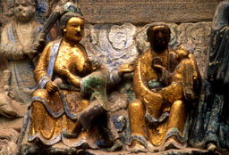 至于佛陀说男子的骨比较白比较重，女子的骨比较黑比较轻，从现代医学常识来看，并不算是不合理的。女子生育孩子，哺乳给孩子，损失了大量的钙质，所以骨质就比较轻、比较黑；男子没这样损失大量的钙质，骨头就比较白也比较重一些。钙质是白色的，请看石灰、钙片也就知道。
佛陀是一位有大智慧博学精神的老师，衪也精通医学，衪说的男骨白、女骨黑是符合现代医学的。
至于佛陀说女子智力较低，若以现代人眼光来看，在教育比较发达的国家，男子与女子的智力是没有高下差别的。但是在佛陀时代的印度，重男轻女，教育不普及，女子根本没有机会受教育，再聪明也变成笨瓜啦！现在的第三世界落后地区，还不是这样么！就是中国古代，也是男尊女卑，连孔夫子都免不了说“女子无才便是德”和“唯女子与小人难养”呀！
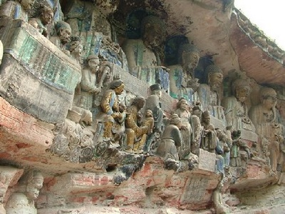 所以，我们要明白，佛陀所说女子智力低，其实是古代印度的情形，那时候的女子们无机会受教育，自然就笨些，这完全是教育的问题。今天您看，多少女子智慧比男子强多了，女科学家、女工程师、女医生、女政治家、女艺术家、女作家、哪一个输给男子呢？可比男子还强多啦！
我们读佛经，必须了解佛陀是以祂当时的社会情况来说的，我们不能以今天的社会情况去批评佛陀歧视女子，须知在佛陀时代的女子是被男子轻视的呀！
至于佛陀说女子容易沉溺于情爱，这倒是古今女子的同病吧！女子是比男子更重情感的，不过，佛陀所说女子易溺于“情”的这一个“情”字，并不单指爱情，也指亲情、母爱、你看，做母亲的多么爱孩子，女子认为生男育女是天职，生下孩子，哺乳给孩子，受护唯恐不周！当然也有不喜欢生孩子的女性，也有不肯哺乳的母亲，不过那都是少数人而已，在古代的印度与中国，妇女都不知道什么叫做避孕，也没有不哺乳给儿女的，那时候哪有什么奶粉和婴儿特别奶水？还不都是做母亲的亲自哺乳？别忘了，佛陀讲经的时代与今天不同。
佛陀说，乳由血变，血怎会变奶呢？其实是血液把营养输送给母亲的乳腺，再由乳腺体制造奶汁，佛陀讲乳由血变，就是此意。
佛陀说：每名婴孩须饮最少八斛四斗甚多母乳才长得大，母亲的血液内的营养都供养给婴孩，所以母亲憔悴了，钙质都给了孩子，所以母亲的骨头就不够白，变黑也变得又轻又脆。你看，那些因缺少钙质而使骨头老化脆弱容易跌断大腿骨的老人，不大多数都是年迈的老祖母吗？
古代的度量衡与现代不同，古代的“一斛”是“十斗”，这个斛字，辞源说音该念胡，我听过有人念锁的，我也不敢确定该念什么音，辞源说一斛等于现代的大约五十二公升多，那么算来，八斛四斗大约等于四百公升左右吧？平均一个婴孩一天大约饮一公升奶吧！总要饮母乳到两岁左右，那么算来，佛陀估计的数量是很接近一般实情的。
佛陀这样开示之后，阿难是怎样反应呢？
经文原文说：
阿难闻语，痛割于心，垂泪悲泣，白言：“世尊，母之恩德，云何报答？”
佛告阿难：“汝今谛听，我当为汝，分别解说：
“母胎怀子，凡经十月，甚为辛苦。在母胎时，第一月中，如草上珠，朝不保幕，晨聚将来，午消散去。母怀胎时，第二月中，恰如凝酥。母怀胎时，第三月中，犹如凝血。母怀胎时，第四月中，稍作人形。母怀胎时，第五月中，儿在母腹，生有五胞。何者为五？头为一胎，两肘两膝，各位一胞，共成五胞。母怀胎时，第六月中，儿在母腹，六精齐开。何者为六？眼为一精，耳为二精，鼻为三精，口为四精，舌为五精，意为六精。母怀胎时，第七月中，儿在母腹，生成骨节，三百六十，及生毛孔，八万四千。母怀胎时，第八月中，出生意智，以及九窍。母怀胎时，第九月中，儿在母腹，吸收食物，所出各质，桃李蒜果，五谷精华。其母身中，生脏向下，熟脏向上，喻如地面，有山耸出，山有三名，一号须弥，二号业山，三号血山。此设喻山，一度崩来，化为一条，母血凝成胎儿食料。母怀胎时，第十月中，孩儿全体一一完成，方乃降生。若是决为孝顺之子，擎拳合掌，安祥出生，不损伤母，母无所苦。倘儿决为五逆之子，破损母胎，扯母心肝，踏母跨骨，如千刀搅，又髣髴似万刃攒心。”
如斯重苦，出生此儿，更分晰言，尚有十恩：第一、怀胎守护恩；第二、临产受苦恩；第三、生子忘忧恩；第四、咽苦吐甘恩；第五、回干就湿恩；第六、哺乳养育恩；第七、洗濯不净恩；第八、远行忆念恩；第九、深加体恤恩；第十、究竟怜悯恩。”
以下是白话语体翻译：
阿难听到佛陀开示之后，就心痛如刀割，流泪悲泣，对佛陀说：“世尊，母亲的恩德，如何才可报答呢？”
佛陀就对阿难说：“你现在听着，我来为你分别解说：
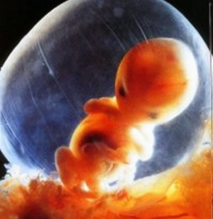 母亲怀胎十个月之久，甚为辛苦。怀胎的第一个月的时候，母亲就担心胎儿会像早晨的露珠那样容易在午间见阳光后就消失掉。怀胎第二个月的时候，胎儿脆弱得像奶油酥。怀胎第三个月，胎儿才稍为聚形似凝结的血滴。怀胎第四个月时，胎儿才初具人形。怀胎第五个月时，胎儿在母亲肚子内形成了五体──一体是头，手脚四肢是四体，合成五体。到第六个月，胎儿在母亲子宫里内，开了六精，就是：眼睛、耳朵、鼻子、嘴巴、舌头和意识。第七个月，婴儿形成骨节有三百六十根筋骨，又生成八万四千个毛孔。第八个月，胎儿生成意识、智力和九窍，即是两只眼睛，两个鼻孔，一个嘴巴，一个尿道和一个肛门，一共九处孔窍。第九个月，胎儿在母亲肚子内会吸食食物各种营养物质，例如：桃、李、蒜、五谷等等的精华。那时候，母亲的身体内，生的内脏向上，熟的内脏向下，好像地面上耸起的高山一般，这山有三个名字：一叫须弥山，二叫业力山，三叫血山。这是以作譬喻而已，它一崩溃，就变化成一条，把母亲体内血液运送的营养输送给胎儿。到了第十个月，胎儿全身各部分都已经一一生长完成，才可以降生出世。倘若是孝顺的儿子，就会合掌举拳而头先出，是为顺产，不会损伤母亲，母亲不会有大痛苦。假如是个忤逆之子呢？就会逆产，破损母亲的胎盘，扯拉母亲的心肝，践踏母亲的骨盆，好像一千把刀和万把刀在里面钻心！”
母亲受这些重大痛苦，才生得出孩子。再进一步分析，母亲还有十种大恩：
第一是：怀胎守护之恩。
第二：临生产受痛苦之恩。
第三：生下孩子就不计较自己所受的痛苦。
第四：母亲自己咽下痛苦来对孩子慈爱温暖，甜蜜照料。
第五：宁愿自己受苦、不舒服也要使孩子干爽舒适。
第六：哺乳养育之恩。
第七：洗净孩子的屎尿，不嫌脏。
第八：孩子远离呢？母亲就怀念惦挂。
第九：深深关怀体恤孩子。
第十：永远慈爱怜惜子女。
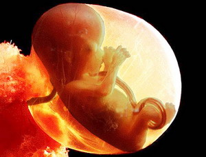 佛陀时代，还没有X光也没有超音波设备，看不到胎儿在母亲子宫内的实际情形，祂只是从推测来解说胎儿的十个月情况。祂所说的，与今天所知的很不一致(夏时虹注：佛陀在《大宝积经卷第五十五·佛为阿难说处胎会第十三》中详尽的阐述了入胎住胎的过程、还描述了初生婴儿身体中各种微生物的形状和位置，请见网页生命传奇——现代科学与古老佛经的惊人一致)。但是，我们要明白，佛陀当时并无现代人那么幸运，可以在电视上看到超音波拍出胎儿的十个月生长过程。
我们现代人从超音波摄影，可以看到胎儿在母亲子宫中，从一开始成孕和在肚脐已生出吸管，吸在子宫内壁上，吸取母亲血液输送的营养。第二周就已形成了两眼、两耳和鼻的雏形，胎儿看来似一只大肚子小鱼，是有尾巴的，卷成弓形，骨骼从一开始已经形成，神经系统、血管系统也渐渐形成，尾巴渐渐退化。第一个月已经略具哺乳动物样子。第六周至第七周已经会自己吮吸大拇指，也有了听觉，听到母亲的心脏跳动和血液流动的声音。第二个月到二个半月，性别开始形成，已经很像一个小小人儿了。
| 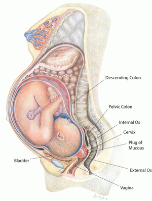 | 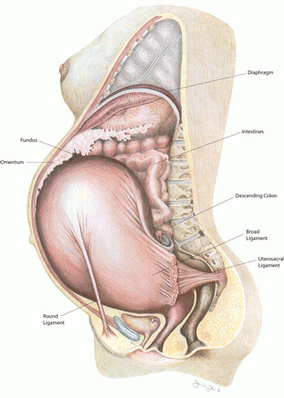 |
胎儿在子宫内是时常移动的，他在羊水内游泳，转来转去的，到了四个月，就会蹬脚伸拳。到了第九个月，接近产期之时，有些胎儿的头部转到了面向生门，就成为顺产。可是有些胎儿却刚巧把腿转到向下，而子宫内的羊水膜就破了，流干了羊水，胎儿不能移动，只有两腿及屁股先出，这就麻烦大了，成为难产！其实不能说顺产的胎儿就是孝顺的孩子，逆产的就是不孝之子。
不过，我们必须明白，佛陀在两千六百多年前，没见过超音波电影的胎儿成长与出生。我们不能以祂在这一方面的不足知识来批评祂，我们要看祂讲此经的动机与目的。佛陀是已经尽其所知来解说做母亲的怀胎生产的痛苦了，我们读经不可以断章取义，我们必须看到经文的前文后意，我们必须明白佛陀是以祂时代的最佳医学生理知识来表达女子做母亲怀胎的辛苦痛苦，由此而引出母亲对养育儿女的十种母爱大恩。
然后 ，佛陀又再用诗颂来赞颂母爱的伟大。下段是经文的原文：
第一、怀胎守护恩 颂曰
累劫因缘重，今来托母胎，月逾生五脏，七七六精开。
体重如山岳，动止劫风灾，罗衣都不挂，妆镜惹尘埃。
这第一首诗颂翻译成白话文是：“ 经历过很多劫的因缘，现在来投入母胎，过了月余才生五脏，过了四十九天才开六精，胎重像山峰一样，母亲无论是行动静止都在受苦难。怀胎连穿衣饰都不能，梳妆台上也停用以 致沾满尘埃。 ”
这首诗颂是称颂母亲怀胎守护的大恩。诗中的“累劫”两个字，累就是累积，“劫”字不是“劫”字。劫 大约是巴利文卡帕(kapa)转译梵文再译成中文，音应 是念做“卡”，这 并不是打劫的劫字，不幸地，连“辞源”也弄错了，把它当作是 劫字，音为“接”，字典也免不了有错误 的啊！真是念书该小心求证！
“劫”字 ，在佛学上来说，是指的不能以通常的年月日时计算的很长很久的时间。也有人翻译为“大时空”的。简单的说，一个小“劫”等于大约人间的一千六百八十万年，这里不能详 细讨论。“累劫”就是说累积了很多很多生生世世千千万万年的缘 份，才有缘得来投生母胎。
第二颂、临产受苦恩 颂曰
怀经十个月，难产将欲临，朝朝如重病，日日似昏沉。
难将惶怖述，愁泪满胸襟，含悲告亲族，惟惧死来侵。
这是佛陀用来歌颂母爱的第二首诗颂。母亲怀胎经过十个月之久，艰难的生产即将来临。天天都似患了重病，日日都似是昏昏沉沉。难于尽述种种担忧和恐惧，忧愁的眼泪流满了胸襟 ，含着悲伤告诉亲人，生怕死亡会来临。
下面是第三首，是赞颂母亲生孩子之后的忘忧欢喜。
第三、生子忘忧恩 颂曰
慈母生儿日，五脏总开张，身心俱闷绝，血流似屠羊。
生已闻儿健，欢喜倍加常，喜定悲还至，痛苦彻心肠。
译成白话文：“慈母生孩子那一天，痛到五脏都裂开。身心都闷痛的会死去，血流 多得好像是杀羊。生下孩子以后闻知孩子平安出世，母亲就欢喜到极点，欢喜刚定下来，悲伤又来了，因为痛楚穿澈心肠。”佛陀为什么用杀羊来 做比喻呢？大约是因为古代印度是畜牧社会，尚未转为完全的农业社会，牧羊很普遍，杀羊也是常见的事，杀羊流血就多的可怕了，母亲生孩子流 的血也多得像杀羊一般了。
第四首诗颂，是赞颂母亲自己忍受一切痛苦来讲甜蜜的慈爱给孩子。
第四、咽苦吐甘恩 颂曰
父母恩深重，顾怜没失时，吐甘无稍息，咽苦不颦眉。
爱重情难忍，恩深复倍悲，但令孩儿饱，慈母不辞饥。
翻译成白话文 是：父母的恩德很深很重，无时不慈爱照料怜惜孩子，吐出甘甜永无息止，自己咽下苦痛，从不皱眉。慈爱情深难忍舍，慈恩深倍增伤悲，但愿孩儿吃得饱，慈母甘愿 换饥饿。
第五首诗颂，歌颂慈母宁愿自己挨湿冷，而让孩子干爽舒适。 原文：
第五、回干就湿恩 颂曰
母愿身投湿，将儿移就干，两乳充饥渴，罗袖掩风寒。
恩怜恒废枕，宠弄才能欢，但令孩儿稳，慈母不求安。
翻译成白话文：慈母甘愿屈身于湿冷，让孩儿安置在干处，慈母两乳喂儿以解饥渴，衣袖遮掩孩儿避风寒，因爱惜孩儿而自己睡不安，爱儿逗儿才心放，但求孩儿得安稳，慈母自己不求安乐。
第六颂是颂扬慈母哺乳养育之恩：
第六、哺乳养育恩 颂曰
慈母像大地，严父配于天，覆载恩同等，父娘恩亦然。
不憎无怒目，不嫌手足挛，诞腹亲生子，终日惜兼怜。
翻译成白话文：慈母像是大地，严父像是苍天。天覆地载均相等，父母亲恩亦同样。慈母心永不憎怒，不会厌嫌孩儿淘气精，孩儿都是亲腹所生，好好坏坏都爱怜。
这里原文的“手足孪”，原文指的是孩子反抗不听话， 以手脚痉挛来做比喻。
第七首，是赞扬慈母洗濯孩子之恩：
第七、洗涤不净恩 颂曰
本是芙蓉质，精神健且丰，眉分新柳碧，脸色夺莲红。
恩深摧玉貌，洗濯损盘龙，只为怜男女，慈母改颜容。
慈母本来是像芙蓉花一般美丽，精神饱满又健康丰满，眉毛秀丽似新出的柳叶，脸色比红莲花更美，只为怜爱孩儿而辛劳，憔悴了美玉一般的容貌。只为洗濯孩子而损坏了双手，只为怜惜儿女，以 致慈母憔悴了容貌。
第八首歌颂慈母怀念孩子远行的。
第八、远行忆念恩 颂曰
死别诚难忍，生离实亦伤，子出关山外，母忆在他乡。
日夜心相随，流泪数千行，如猿泣爱子，寸寸断肝肠。
翻译成白话文：死别的痛苦实难忍受，生离实在也很伤心，孩子远行到远方，慈母忆念也跟到他乡，天天月月心中惦念相随，流泪数千行，如同猿猴妈妈哭泣思念孩子，肝肠寸寸 都痛断。
这首是描写儿女长大成人外出去他乡，慈母在家惦挂忆念的伤心。
第九首是歌颂父母体恤之恩。 原文：
第九、深加体恤恩 颂曰
父母恩情重，恩深报实难，子苦愿代受，儿劳母不安。
闻道远行去，怜儿夜卧寒，男女暂辛苦，长使母心酸。
翻译成白话文： 父母亲的恩情深且重，儿女实无法报答的完，孩子受苦，父母愿代替他受苦，孩子辛苦，慈母心不安。听闻孩子要远行去外地，慈母整夜都不能睡以致受寒 ，儿女暂受一些辛苦，慈母就常常辛酸伤感！
第十首，歌颂父母恩深：
第十、究竟怜愍恩 颂曰
父母恩深重，恩怜无歇时，起坐心相逐，近遥意与随。
母年一百岁，长忧八十儿，欲知恩爱断，命尽始分离。
翻译成白话文：父母爱孩儿恩深重，爱怜孩儿永无休止，无论站起坐下都在心中牵挂孩子。无论远近也在惦念相随。慈母既使到了一百岁，也还是常常在忧念她 的八十岁孩儿，若要慈母慈爱恩情断绝，除非是到了生命的尽头才会分离吧！
上面的第八至第十首颂，实在是很能反映古今慈母心。唐诗说“慈母手中线，游子身上衣，临行密密缝， 只恐迟迟归。”也还不及佛陀这几首颂的描写深切呢！
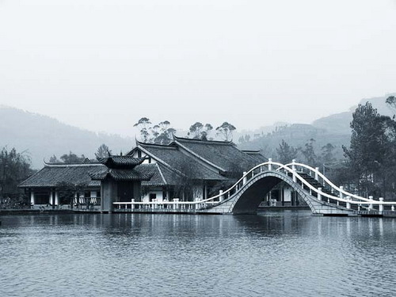 今天 ，多少慈母在挂念流落在外国异乡的孩子，多少人在美国、加拿大，澳洲、欧洲，远离了故乡的父母，知不知慈母在家乡惦念着他们呢？知不知道慈母在家乡 日夜惦念怀念悲伤流泪到天明？是的，出国也许创造了事业前途，可是那是多少慈母在悲泪牵挂啊！不少人在美国，忽闻家乡传来消息，父母病重了，慌忙赶回去。有些人 还见到慈母慈父一面，可是，多少人连这最后一面也见不到啊！怎么痛哭，能够弥补得了么？几乎每天都有人打电话，或写信来要求我挽救他们的 垂危的父母生命，可是我也只不过是个凡夫俗子哪！我有什么法力可以救尽天下的慈母慈父生命？来安慰天涯游子的悲痛后悔的心？
朋友们，还是趁着父母还在世的时候，莫顶撞父母，多多孝敬供养父母吧！多和父母团聚吧！莫要等到父母不在世，纵然能念经超度，到底也总是见不到面 啊！
佛陀慈悲开示，叫人孝敬父母，唯恐弟子们还不明白，所以祂又在继续说下去。
下面是经文的原文：
佛告阿难：“我观众生，虽绍人品，心行愚蒙，不思爹娘，有大恩德，不生恭敬，忘恩背义，无有仁慈，不孝不顺。阿娘怀子，十月之中，起坐不安，如擎重担，饮食不下，如长病人。月满生时，受诸痛苦，须臾产出，恐已无常，如杀猪羊，血流遍地。受如是苦，生得儿身，咽苦吐甘，抱持养育，洗濯不净，不惮劬劳，忍寒忍热，不辞辛苦，干处儿卧，湿处母眠。三年之中，饮母白血 。
下面是我的翻译白话文：
佛陀对阿难说：“我观察众生世人 ，继承了父母的人品，但是心中还是很愚昧，不念父母恩德，不恭敬父母，不仁不义，忘恩负义，不孝顺父母！须知道：慈母怀胎十个月之中，起坐不安，好比挑了重担 ，饮食吃不下，好像患了大病久病之人。足月生孩子之时，受尽种种痛苦，好不容易生下了孩子，好像杀猪羊一般流了满地的血。又怕养不活孩子，母亲受了那么多苦才生下孩子，自己甘愿吃苦，也要给孩子温暖甜蜜 ，保持爱护小心养育，为孩子洗净屎尿不洁，不畏劳苦，为孩子去忍受寒冷炎热，不辞劳苦。干燥的地方给孩儿睡，潮湿的地方 则母亲眠。三年之中，孩子都靠吸饮母亲的奶汁维生，就像饮白色的血一般。 ”
佛陀经文原文继续说：
婴孩童子，乃至成年，教导礼义，婚嫁营谋，备求资业，携荷艰辛，勤苦百倍，不言恩惠。男女有病，父母惊忧，忧极生病，视同常事。子若病除，母病方愈。
翻译成白话文是：“养育儿女，经婴孩时代，到童年，到成长为成人，作父母的都须教导儿女礼仪，又得为儿女的婚嫁而打算，又得为孩子的事业资产而筹备。负担艰辛，辛劳百倍 ，做父母的也不说什么恩惠期望报答，儿女有病，父母就担忧惊慌，乃至于因忧虑而生病。直到孩子病痛解除了，母亲也才病愈。 ”
佛陀又开示说：
如斯养育，愿早成人。及其长成，反为不孝。尊亲与言，不知顺从，应对无礼，恶眼相视。欺凌伯叔，打骂兄弟，毁辱亲情，无有礼义。虽曾从学，不遵范训，父母教令，多不依从，兄弟共言，每相违戾。出入来往，不启尊堂，言行高傲，擅意为事。父母训罚，伯叔语非，童幼怜愍，尊人遮护，渐渐成长，狠戾不调，不伏亏违，反生嗔恨。弃诸亲友，朋附恶人，习久成性，认非为是。
翻译成白话文：
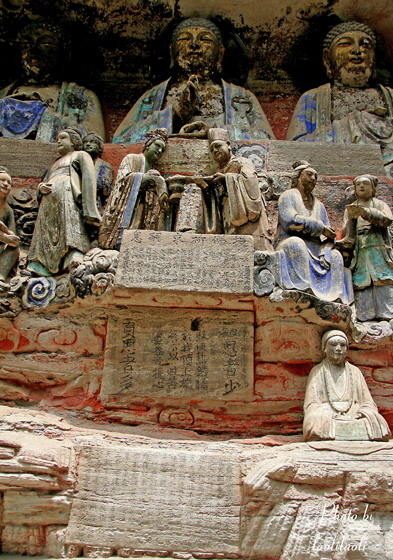 “这样子养育儿女，盼望早些长大成人 ，等到儿女长成了，反而不孝，长辈亲人劝告他也不听从，反而用无礼的态度来应对，用凶恶的眼色来对待，欺凌叔叔伯伯，打骂兄弟，毁坏侮辱亲人，毫无礼仪，虽然也念过书，也不遵守规范训律 ，对于父母的教训，大多不听从，和兄弟说话也每每暴戾争吵。凡是外出或回家，也不禀告父母。说话行动乖张傲慢，凡事擅作主张。孩子年幼之时，长辈 都袒护他纵容他，孩子渐渐长成就变成凶狠暴戾无法教导了，非但不承认自己的理亏，和忤讳教训，反而憎恨怨恨父母，抛弃自己的亲友，去和坏人朋比作恶 ，时间长久了，成了坏习性，把错误的都认为是对的了。 ”
两千多年前佛陀开示所指出的这些情形，多么像今天的问题少年，问题青年，听来是多么的熟悉啊！每年不知有多少个家庭闹这些不良子女的悲剧，不知有多少人向我哭诉说子女不听话 呕气。
让我们再读经文下去，
或被人诱，逃往他乡，违背爹娘，离家别眷。或因经纪，或为政行，荏苒因循，便为婚娶，由斯留碍，久不还家。
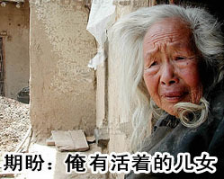 这 一段是说：“ 有些子女长大之后，被人引诱，逃到外地去，违别了父母，离开家，抛弃了家眷，有些是去做生意了，有些是去从政了，时间因循久了，就在外头结婚，从此 滞留在外，很久都不回家乡了。”
怎么样，听来像不像今天的情形。今天不是很多子女争先恐后地到外地去，把父母留在家乡不顾吗？不是很多子女在外国定居 ，不再回乡探望父母吗？
佛陀又开示说：
或在他乡，不能谨慎，被人谋害，横事钩牵，枉被刑责，牢狱枷锁。或遭病患，厄难萦缠，囚苦饥羸，无人看待，被人嫌贱，委弃街衢。因此命终，无人救治，膨胀烂坏，日暴风吹，白骨飘零。寄他乡土，便与亲族，欢会长乖，违背慈恩，不知二老，永怀忧念，或因啼泣，眼暗目盲；或因悲哀，气咽成病；或缘忆子，衰变死亡，作鬼抱魂，不曾割舍。
译成白话文：“ 有些子女在外地他乡，不能够自己谨慎小心，被人谋害了，被牵连进横祸官非去了，受了冤枉刑罚，进了监牢，被枷锁缚住了，或者又患了病痛，遭到厄难缠身，被囚禁了，挨饥饿，瘦弱了，无人照顾，又被人嫌弃鄙视，被弃于街头巷尾 ，因此丧命死掉，没有人来救活他，任由日晒风吹雨淋，尸身肿胀腐烂了，白骨散落于他乡异国，从此永别父母亲人，永别了慈母的恩德，不知道父母两老还在永久忧心惦念，哭泣到眼睛都瞎了 ，悲哀到气喘病重，或者由于苦念孩子而衰老死亡，到了做鬼魂，也还念念不忘孩子啊！ ”
古代有这些事，今天更多！多少做父母的在苦苦怀念倚闾而坐，流泪等待爱子爱女从外国回来啊！流泪流到两眼都瞎了，也不见孩子回家，甚至也得不到一封信 啊！哪知道孩子已经在美国撞车身亡了呢？哪知子在加拿大被人连累关进了牢狱呢？哪知孩子早已埋骨异国呢？哪知孩子在什么外国被人谋杀了呢？天下父母心啊 ！无尽的慈爱惦念着，流不尽的血泪啊！做儿女的，可知道父母的悬念？
让我们再读经文：
或复闻子，不崇学业，朋逐异端，无赖粗顽，好习无益，斗打窃盗，触犯乡闾，饮酒樗蒲，奸非过失，带累兄弟，恼乱爹娘，晨去暮还，不问尊亲，动止寒温，晦朔朝暮，永乖扶侍，安床荐枕，并不知闻，参问起居，从此间断，父母年迈，形貌衰羸，羞耻见人，忍受欺抑。
译成白话文：
“又有些做儿子的，不爱上学念书， 却去交结一些异端不良朋友无赖坏蛋，学些不良的习惯，打斗偷窃抢劫，侵扰街坊，酗酒赌博，做奸犯科，拖累兄弟，气坏了父母，又早出夜归，出入也不问父母起居是冷是热是否平安。从月头到月底，也永远不去扶持老父老母，更不去安排床 铺给父母休息，不去问候父母一声。从此隔离了，父母年老了，衰弱了，忍受这一切子女的欺负，而且羞于见人，不敢向人诉说。 ”
佛陀好像是预见到今天的那些不良少年不良青年呢！看，那些逃学不肯念书不求上进的青年人！看，那些在外面滥交太保或阿飞的青年人，佛陀这一段开示，不 也是他们的写照吗？
让我们再读经文下去，
或有父孤母寡，独守空堂，犹若客人，寄居他舍，寒冻饥渴，曾不知闻。昼夜常啼，自嗟自叹，应奉甘旨，供养尊亲。若辈妄人，了无是事，每作羞惭，畏人怪笑。
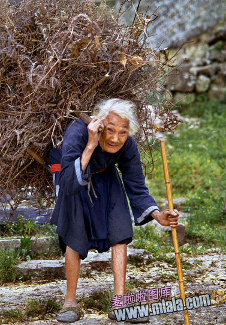 翻译成白话文：“有些是父亲孤单一人，或是母亲守寡独居，独自守着空房子，好像是客人 寄居在别人家中，是饥饿？是苦渴？是受寒、是冻死，都没有人知道，没人可怜，唯有自己伤感嗟叹！做子女的，理应是尽用甘美的食品供养父母才对，可是有些狂妄之徒，根本没 将这件事放在心上。做父母的只好自己惭愧，恐怕被人耻笑。 ”
现代的社会，不知有多少单身的母亲或单身的父亲，独立抚养儿女，等到把儿女养大成人，自己已经老了，找不到工作，又找不到伴侣，孩子长大飞走了，也不问父母是死是活，是病是康 ，单身的母亲或父亲，为儿女牺牲了一辈子，换得来只是被儿女遗弃，这些现象，原来两千多年前佛陀也早就有指出来啦！正是：“可怜古今父母心，无情最是离巢燕 ”啊！这是我套用唐代大诗人白居易的名诗改编的两句。我不是诗人，实在咏叹不了世间父母被子女遗弃的悲惨 啊！
请在看本经的原文，
或持财食，供养妻儿，忘厥疲劳，无避羞耻；妻妾约束，每事依从，尊长嗔呵，全无畏惧。
或复是女，适配他人，未嫁之时，咸皆孝顺；婚嫁已讫，不孝遂增。父母微嗔，即生怨恨；夫婿打骂，忍受甘心，异姓他宗，情深眷重，自家骨肉，却以为疏。或随夫婿，外郡他乡，离别爹娘，无心恋慕，断绝消息，音信不通，遂使爹娘，悬肠挂肚，刻不能安，宛若倒悬，每思见面，如渴思浆，慈念后人，无有休息。
译成白话文：“有些人用财富和美食供养妻子儿女，一些也不觉得辛劳， 也一些都不避讳，被妻妾管束，就事事都顺从，但是，父母尊长教训苛责，就毫无敬畏了。
又有一些女儿，未出嫁之前，是很孝顺的，嫁出去以后，就渐渐变成不孝了，父母轻微责骂她，她就心生怨恨了。又有些女儿，跟随丈夫去了外地，离别自己的父母，也毫无留恋怀念，完全断绝了消息，不通 书信。使到父母牵肠挂肚地惦念担心 ，没有一个时刻可以安心的，那种痛苦，好像给倒吊地挂了起来一般，常常在思念子女，无时休止。 ”
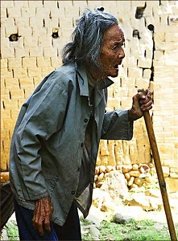 一般说来，嫁出去的女儿，大多数仍是孝顺怀念父母的。东西方民族性不同，风俗不同，观念也有分别。就一般而言，中国人的嫁出去的女儿，孝顺父母的居多，也很能够怀念照顾爹娘和娘家手足 、女婿也大多数很孝顺自己父母和岳父母。西方人嫁出去的女儿一般比中国人的女儿薄情一些，只知丈夫，不管爹娘，洋女婿和岳父母也很多相处不好。
佛陀上述的一段话，所指的情形，可能在古代印度较中国普遍吧！我们别错认佛陀是指责所有的嫁出去女儿都是如此不孝！中文那个“或”字，是“有些人”的意思 。
佛陀举例讲说不孝的子女的一些例子之后，就结语说：
父母恩德，无量无边，不孝之愆，卒难陈报。”
祂说 ：“父母的恩德，无量无限地深，儿女不孝之罪，怎么也说不尽！”衪的意思就是说还有很多很多不孝不义的人，哪说得尽？
让我们来继续读经文：
尔时，大众闻佛所说父母重恩，举身投地，捶胸自扑，身毛孔中，悉皆流血，闷绝躄地，良久乃苏，高声唱言：“苦哉，苦哉！痛哉，痛哉！我等今者深是罪人，从来未觉，冥若夜游，今悟知非，心胆俱碎，惟愿世尊哀愍救援，云何报得父母深恩？”
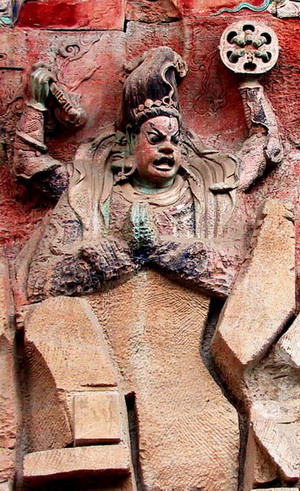译成白话文：
“那时候，大众听了佛陀说的父母种种深厚恩德之后，大家都扑伏在地面上，捶打胸口，身体的毛孔都流了血，还有些人晕倒在地上的，很久才 再醒过来，众人高声叫喊：“苦啊，苦啊，痛心啊，痛心啊！我们现在都是罪深的人啊！从来都不知道自己的不孝罪深，好像是在黑夜中游悠荡一般无明，现在才觉悟前非，心胆都难过 得碎了，唯有祈求老师哀怜我们，教我们如何去报答父母的深恩吧。”
这一段描写听说法的弟子们，人人被佛陀的开示所感动的悔悟的情形，现代人必定会觉得可笑和难以置信，何以弟子们会全身毛孔出血又会晕倒？我猜想是这样的：印度古代有一种风俗，在悲伤难过之时 ，撕裂自己的衣服，自己拼命捶打胸口，高声痛哭，裸体在地上的沙石中打滚，折磨自己，这是用自我折磨来赎罪的意思。在沙石中打滚久了，裸露的皮肤 怎不流血呢？那么样在烈日下滚来滚去，难免就有些人会晕倒昏迷过去了。
请在看原文：
尔时，如来即以八种深重梵音，告诸大众：“汝等当知，我今为汝分别解说：假使有人，左肩担父，右肩担母，研皮至骨，穿骨至髓，绕须弥山，经百千劫，血流没踝，犹不能报父母深恩；假使有人，遭饥馑劫，为于爹娘，尽其己身，脔割碎坏，犹如微尘，经百千劫，犹不能报父母深恩；假使有人，为于爹娘，手执利刀，剜其眼睛，献于如来，经百千劫，犹不能报父母深恩；假使有人，为于爹娘，亦以利刀，割其心肝，血流遍地，不辞痛苦，经百千劫，犹不能报父母深恩；假使有人，为于爹娘，百千刀戟，一时刺身，于自身中，左右出入，经百千劫，犹不能报父母深恩；假使有人，为于爹娘，打骨出髓，经百千劫，犹不能报父母深恩；假使有人，为于爹娘，吞热铁丸，经百千劫，遍身焦烂，犹不能报父母深恩。”
翻译成白话文：
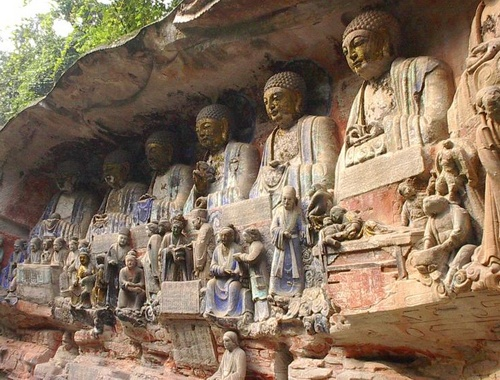 那时候，佛陀就用八种深重的梵音来对大众说：“你们听着，我现在分别一一解说给你们听。”这里的梵音，可能是指佛音而言，或者是指佛陀用八种不同的地方方言来说法。印度是由很多个邦国组成的，有很多种不同的方言，博学的佛陀 ，很可能通晓很多种方言，因为古代中国译经者，把印度的文字语言音乐什么都译为“梵”字，所以我推断此处经文的八种“梵音”，可能是八种不同的方言 ，而不是同时一齐发的，世俗以为有八种神通的佛音，这是史书里边有的八种“神通”的“佛音”。因为这是在说理，只用普通语言就已可使人听得懂了， 无须运用什么神通，还有，那些来听佛陀说法的人，很多是来自各处不同邦国的，未必个个听得懂佛陀所说的巴利文 ，佛陀于是自己把最重要的说法用八种不同的语言，来讲给在场的各种邦国民族的人士听。您看，今天的天主教教宗不是在每年的圣诞节与复活节，向站在圣彼得大广场的听众，用拉丁文、意大利文、法文、西班牙文、英文、俄文、希腊文......等十二种语文讲道吗？我推断两千 多年前，佛陀说法也曾用很多种语文来讲的。所以说，我说上面所说的八种梵音，并不是什么神通的梵佛音，我认为那是八种不同的方言，这是我个人的看法。
佛陀对大众说：“假如有任何人，左肩挑担着父亲，右肩挑担着母亲，挑担到皮烂骨见骨髓，那样子辛苦，绕着须弥山行走，走上千千百百年代的漫长时间，流血流到 浸上了脚踝，就是这样来做，也还是报答不完父母的深恩的。
假如有任何人，在饥荒灾难之时，为免爹娘挨饿，就尽自己的全身的肉，斩剁成肉酱来供养父母，这样供养千千百百万万年代那么久，和父母的深恩相比，只是 像微尘一般微小，还是无法报答得尽父母的深恩的。
又假 如有任何人，为了要报答爹娘，就自己挖了眼睛出来奉献给佛菩萨，这样子千千万万个年代之久，也还是无法报答得尽父母的深恩的。
假如有任何人，为了要报答爹娘，就用利刀自己割出心肝内脏来，血流满地，也不怕痛苦，这样经过千千万万无数年代，也还是报答不尽父母的深恩的。
假如有任何人，为报答父母之恩，而用千刀万斧来刺斩自己身体，左边插入右边刺出，这样经过千千万万无数年代，也还是无法报答得尽父母的深恩的。
假如有人为了报答爹娘，就用自己打碎骨头打到流出骨髓，就算经过千千万万无数年代，也还是报答不尽父母的深恩的。
假如有任何人为了报答父母，而去吞下去热的铁丸，就算经过千千万万无数年代，弄到全身焦烂，也还是报答不尽父母的深恩的。”
在这七段譬喻里，佛陀用七种不同的受苦方式来譬喻而已，并非叫人这样做这些事才可以报答父母。佛陀是这样譬喻，等于说就算是肝脑涂地也报答不尽父母大恩。读经的人，千万不 可错解了经义，而去自己残害自己的身体生命，以为这样可以报父母大恩啊！
从前佛教的出家人盛行焚指报亲恩，就是用火油把自己的十只手指燃烧来供佛，以为这样就可以报父母大恩，这是一种愚不可及的迷信愚行。想 一想看，假若焚指受痛苦就可以报母恩，那么把自己整个人都当作烤猪来烧烤供佛，是不是就更大功德呢？那么父母就可以成佛做神仙了么？你要是不小心弄伤了手指流血，你的母亲都会心 疼焦急无比啊，怎么会要你去焚指报恩？佛教有许多陋规与不合理的迷信传统，像焚指报恩之类，那都不是佛教本意的，要学佛，就得正本清源去研究原始佛 经，别轻信任何迷信！
现在让我们再读经下去：
尔时，大众闻佛所说父母恩德，垂泪悲泣，痛割于心，谛思无计，同发声言，深生惭愧，共白佛言：“世尊！我等今者深是罪人，云何报得父母深恩？”
这一段是说，大家听到佛陀那样开示父母恩德太深重，难于报答得尽，大家就都流泪悲伤地哭了，心痛得好像被刀割，大家想来想去也想不出该怎么办 。同时大家惭愧地向佛陀说：“世尊，我们现在都知道自己是不孝的罪人了，但是，我们要怎样做，才能报答父母的深恩呢？”
经文说：
佛告弟子：“欲得报恩，为于父母书写此经，为于父母读诵此经，为于父母忏悔罪愆，为于父母供养三宝，为于父母受持斋戒，为于父母布施修福，若能如是，则得名为孝顺之子；不做此行，是地狱人。”
翻译成白话文：佛陀告诉各弟子说：“你们想要报答父母深恩，你们须得为父母来抄写这本经文，为父母诵念这部经文， 须得为父母去忏悔消除罪孽，为父母去供养三宝（三宝即是佛、法、僧），为父母去持戒吃素，为父母去布施修福，假 如能这样做到，那才是孝顺的孩子，假如不这样做到，那就是将来下地狱的人了。”
再读经文下去：
佛告阿难：“不孝之人，身坏命终，堕于阿鼻无间地狱。此大地狱，纵广八万由旬，四面铁城，周围罗网。其地亦铁，盛火洞然，猛烈火烧，雷奔电烁。烊铜铁汁，浇灌罪人，铜狗铁蛇，恒吐烟火，焚烧煮炙，脂膏焦燃，苦痛哀哉，难堪难忍，钩竿枪槊，铁锵铁串，铁槌铁戟，剑树刀轮，如雨如云，空中而下，或斩或刺，苦罚罪人，历劫受殃，无时暂歇，又令更入余诸地狱，头戴火盆，铁车碾身，纵横驶过，肠肚分裂，骨肉焦烂，一日之中，千生万死。受如是苦，皆因前身五逆不孝，故获斯罪。”
这一段经文，是佛陀借上文来解释，不孝之人怎么样下地狱受罪。
佛陀告诉阿难说：“那些不孝之人，到了肉身死亡命终之时，会因为有不孝之罪，而被罪孽，沉重拖 坠地狱，这地狱名叫阿鼻无间地狱，是最低层的大地狱，面积有八万由旬那么大。（这里我要注解一下，由旬是古代印度的一里，大约等于现代的十六英里吧 ，各家说法不同，我是采用十六英里之说，八万由旬大约等于一百二十八万平方英里吧？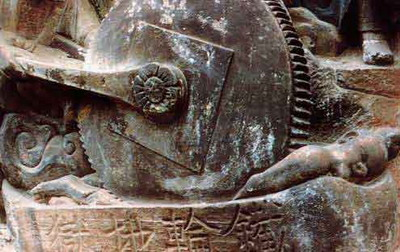都是譬喻的大约数字而已。）这座无间地狱，四面都是铁铸的城墙，周围都 有铁罗网，地面也是铁铸的，大火在猛烈焚烧，又有雷轰电闪，又有白热的铜汁铁汁来浇淋有罪的人，又有铜狗铁蛇在喷火来焚烧罪人，又有油锅烹炸罪人，种种刑法 ，痛苦不堪，难以忍受，又有铁钩，竿子啦，枪啦，矛啦，铁链啦，铁锤啦，铁戟啦，剑林刀轮啦，像雨点那么多，像云那么大，从空中降落来惩罚那些罪人 ，或是砍杀，或是刺穿，不知要惩罚多少千千万万年代，没有片刻的停止。而且还有鬼卒夜叉把罪人驱赶到别的地狱去，叫罪人头戴火盆，用铁车来碾碎他们的身体，铁车 冲驶所过，罪人肠肚裂开，骨肉焦烂，一日之中，真是不知死过多少次，这样受苦，为什么呢？就是因为这些罪人生前忤逆不孝，所以受此 恶报苦刑惩罚。”
佛陀开示的上面这一段，描写阿鼻无间地狱的惨况，已经有人向我提出过疑问：叫我拿出科学的证据来证明无间地狱在何处。惭愧得很，我不是科学家，我也没有什么证据可以证明地狱存在。不过，我推想 ，宇宙中的那些黑洞，很有可能就是地狱吧？黑洞的高热，不知有几千万度，黑洞的物质浓度与比重，不知大过我们世界的几千亿倍？黑洞的吸力，不知有多大，无论什么物质 或非物质，被黑洞吸进去，无不被焚化为飞灰，就是非物质的微中子也不能例外。人死后，肉体物质腐化败坏，但是灵识仍在，灵识不是物质，所谓中阴身，可能是 由非物质的微中子构组而成，假如这个人是修行人，心 地光明纯洁清净，又无恶业随身，当然清醒地飞向光明，接受诸佛接引，各随佛缘去各种净土。倘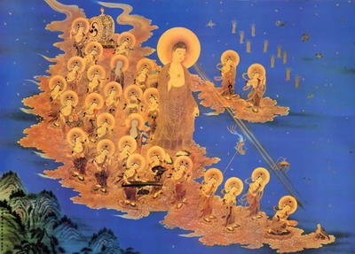若此人一生作恶，有很多恶业随身，心地黑暗污秽，死后自然也 仍是无明，神识昏昏迷迷，随着恶业的黑暗吸力而去。若不是轮回于畜生道，就是进入了最黑暗可怕的地狱──可能是黑洞──去受那些种种刑法 了，至于什么刀山油锅刀剑矛戟钩绳之苦，相信只是佛陀的比喻，就是说进了地狱受的种种苦痛，就好比受刀山油锅一般。因为人的感觉 ，是从经验才知道的，古时候的印度人或中国人，从经验中知道有刀山剑林的斩剁之苦，也见过油锅烹炸畜类，所以也只能用这些东西来譬喻地狱的痛苦。如果佛陀是现代人，也许就说，有死光 啦，毒气啦，用水银剥皮啦，用“吊飞机”，“灌滚水”，“灌滚油”之那一些现代人的残酷毒刑来做譬喻了。
也许地球和其他星球火山口底下也是地狱吧？也许地球中心的白热熔岩铁浆也是地狱之一吧？这倒是有些符合佛陀开示的四面都是铁墙的地狱。总之，没有去过地狱的人，怎知道 有没有地狱？而去过地狱的人，却又没有回来的，一些口信也没有。
不过，就算物理学上无法证明有无地狱，心理上却不难解释地狱的存在。
一个人，假如行善做好人，心理上是愉快光明的，自然不会在心中有什么罪恶感。在他的知识与听来的观念之中，他已知作恶会下地狱受罪，而他 都没有作坏事，心中坦坦荡荡，光明正大，他意识中就肯定了自己不会进地狱，所以他心中就不会出现地狱了。
反过来说，一个人假如又不孝，又不行善，又多做坏事，多做恶孽，无论他怎么不信鬼神，不畏因果，不信道德，不信公理，他心中的潜意识之内，总多多少少存 留着一些从幼年就听到的因果律，善有善报，恶有恶报，和一些有关地狱的受苦受罪传说。等到他命终死后，他的潜意识伴着中阴身，免不了会产生对地狱的恐惧。那么，地狱的一切 苦刑，就在他的神识中幻现了，也可说是良心自责的罪恶感的折磨吧！
佛陀说过“心生万法”，又说过“诸法皆由心生”，那么，地狱的一切恐怖景象与刑罚的痛苦，从由罪人的心中自责而产生，化幻为真，就好像活人在做 噩梦一般，那不也是地狱吗？若说地狱在罪人心中，这句话是可以说的通的，何必一定要扯上黑洞与火山洞呢？
佛陀设教，解说罪人必入地狱受苦刑，永不得翻身，正是要把这种因果律的恶有恶报的定律灌入人心，警戒人们不可作恶！那些自命很科学的人，自做聪明来否定因果律，否定地狱之说，自以为很科学了，可知道这样做， 是等于否定了“杀人者必判死刑”，“劫盗必被判枪毙”等等法律吗？否定了法律刑法，就是助长犯罪呀！助长犯罪，罪也同等于自己犯罪一样了！为什么要否定“地狱”的阻吓犯罪邪恶的功用 ？
现在让我们再读经下去：
尔时，大众闻佛所说父母恩德，垂泪悲泣，告于如来：“我等今者，云何报得父母深恩？”
众弟子听闻佛陀所说父母种种恩德，大家都流泪哭泣，再次请问于老师：“我们从今以后，要怎么样才可以报父母深恩呢？”
经文说：
佛告弟子：“欲得报恩，为于父母造此经典，是真报得父母恩也。能造一卷，得见一佛；能造十卷，得见十佛；能造百卷，得见百佛；能造千卷，得见千佛；能造万卷，得见万佛。是等善人，造经力故，是诸佛等，常来慈护，立使其人，生身父母，得生天上，受诸快乐，离地狱苦。”
译成白话文：
佛陀就开示弟子们：“你们想要报答父母深恩，就必须要为父母印送这部经典，这是真的报荅父母大恩。你能印送一卷，就见一位佛；印赠十卷，就得见十位佛；印赠百卷，就 得见一百位佛；印赠一千卷，就得见一千位佛；印赠一万卷，就得见一万尊佛。这种善人发心出力印赠此经，会得到诸佛菩萨来加持保护，使到他的生身父母，都可以获得接引往生净土，永远快乐，永不会受地狱之苦。 ”
这一段佛陀的开示，是教我们印赠这部孝经，就有功德，可获得诸佛菩萨加持，接引父母往生极乐净土，这样是最好报答父母大恩的方法。
有人问我，印此经有何功德呢？为何会获佛佑父母？
我的答案是，印赠此经，可以启发人人孝顺父母，人人行善，人人戒杀生戒做恶，消除了社会上很多的罪行。所以印此经特别有大功德，会得到诸佛诸菩萨的加持 ！
本经的末段如下：
尔时，阿难及诸大众、阿修罗、迦楼罗、紧那罗、摩侯罗伽、人、非人等、天、龙、夜叉、干闼婆、及诸小王，转轮圣王，是诸大众闻佛所言，身毛皆竖，悲泣哽咽，不能自裁，各发愿言：我等从今尽未来际，宁碎此身犹如微尘，经百千劫，誓不违于如来圣教；宁以铁钩拔出其舌，长有由旬，铁犁耕之，血流成河，经百千劫，誓不违于如来圣教；宁以百千刀轮，于自身中，自由出入，誓不违于如来圣教；宁以铁网周匝缠身，经百千劫，誓不违于如来圣教；宁以锉碓斩碎其身，百千万段，皮肉筋骨悉皆零落，经百千劫，终不违于如来圣教。”
译成白话文：
那时候，阿难尊者与弟子大众，还有那些阿修罗、迦楼罗（吃龙的金翅鸟，是天龙八部之一）、紧那罗（是一种非人的神，天龙八部之一），摩侯罗伽（大蟒蛇之神），和那些人非人、仙人，天龙、夜叉 、干达婆（香神与乐神），和那些小王，还有转轮圣王......，等等许多弟子大众，听了佛陀的开示之后，激动得毛骨悚然，悲泣哽咽 ，不能自制，各皆发愿说：
“我们从今以后，一直到未来无穷尽时间，都宁愿粉身碎骨成为微尘，经千千万万年代，也誓言永远不违背佛陀的教训；我们宁愿被铁钩拔出舌头，拖到十六里长，被铁犁耕犁 它到血流成河，就算经过千千万万年代，也誓言决不违背佛陀的教训；我们宁愿被千刀万剑穿插自身，插出插入多少千次，也誓言永不违背佛陀的教训；我们宁愿被铁网周围捆 缚全身，经过千千万万年代，也誓言永不违背佛陀的教训；我们宁愿被刀斧剁斩碎尸千万段，皮肉筋骨都零碎，虽经千千万万年代，也不敢违背佛陀的教训 ！ ”
这一段是讲他这些弟子们发誓而已，并不是要真正这样做。这是誓言，因为古代的印度人很喜欢发毒誓，什么事情都是千刀万剐，说什么碎尸万段，这种东西誓不敢做。这是印度古代人的发誓的方式，现在还是有。
经文 ：
尔时，阿难从于坐中安详而起，白佛言：“世尊，此经当何名之？云何奉持？”
白话文：
那时候，阿难从坐位很安详的起立，向佛陀请问：“世尊，此部经文应用什么名字呢？如何来奉持呢？”
经文：
佛告阿难：“此经名为父母恩重难报经，以是名字，汝当奉持！”
尔时，大众、天人、阿修罗等，闻佛所说，皆大欢喜，信受奉行，作礼而退。
白话文：
佛陀就开示阿难：“这部经文就命名为“父母恩重难以报答经”！你们应当利用这个经名奉持。”
那时候，大众弟子、天人、阿修罗等等，听闻佛陀这样的开示，人人皆大欢喜，都信奉实行，人人行礼，然后退席。
念此经之后，必须加念“报父母恩咒”四十九遍：“南无密栗多哆婆曳莎诃”回向给父母！
上面我们已经研读完了佛说父母恩重难报经。本经文字不算很深奥，道理也很简单。可能就是因为如此，一向未受到学佛者的重视，并未予以推广，以至很多人都不知道有这 一部孝经。甚至还有人误解了佛教，以为佛教主张出家修行，是不要父母的，不要孝顺父母的。
现在，我们研读过这本佛说的孝经，我们就知道，佛陀当时已经出家成了佛，也还是要特别开示，教弟子们去孝敬父母呢！
读了这部佛经，我们就知道，所谓学佛修行，并不是弃家出走抛弃父母妻子，才可以修行。佛陀当日抛弃的是富贵荣华，与未来的王位，祂并没有抛弃父母妻子，成道以后的佛陀， 迎接他的父母和妻子一同去修行，使父王与继母全家，都得免于被后来的兵变屠杀。父母也后来都修成了佛。佛陀的太太，太子妃耶输陀罗和儿字罗候罗，也都修成了菩萨品位，佛陀 也超度了祂的亲生母后成为佛母。
你看，佛教哪里是不要父母妻子的呢？佛陀是主张把世俗的亲情，度化为修行的法眷，法亲，法侣，同证菩提的啊。
读了本经，我们 就应该自我检讨，是不是对得起我们的父母亲呢？我们应该怎样做，去报答父母养育的辛劳大恩呢？
一个明白佛理的人，一个懂得保健知识的人，是不会用酒肉和各种莫名其妙的补品去供养父母的。因为肉食与超补，徒然会使父母亲得到高血压 、糖尿病、心脏病、肠胃病、中风、癌症，促成父母亲的早死而已。
真正懂得怎么样去孝敬父母的人，是应该用保健的素食，去供养父母的。素食可以使父母免于高血压、糖尿病等等致命的疾病，因此可以健康长寿， 活得快乐安逸。
真正懂得孝敬父母的人，是会趁着父母还健在，就多多承欢膝下，多多照料父母的生活和保健。不要等到父母不在世以后，才去后悔悲伤，那又有什么用！
真正懂得孝敬父母的人，要报父母大恩，除了供奉甘旨之外，应该尽力去为父母亲做一点善事布施，功德回向给父母。
若要报父母大恩，我们就应该好好的保重自己，洁身自爱，努力上进，学业有成，事业有成 ，以慰父母的殷切期望。
真正要报父母大恩，我们就应该为父母持诵佛经佛号，也要接引父母信佛修行。能够接引得父母修行成道，了生死，不入轮回，这才是真正的报恩。父母若已不幸不在世，也应多为他们行善，回向给他们，超度他们往生净土。
一个人若是不孝不义，纵然是自己出家苦修，也还是抵消不了不孝的大罪业的。你可见过有不孝而能成佛的人？
孝行，就是修行的一项砥砺品德的方法，孝行 ，是修行基本法门之一。若不修孝行，那么修 什么打坐观心，什么苦行，什么密法，那都是水中捞月而已，必得不到正果的。
是的，本经简单浅白，却包含着人生的至理。孝行就是最重要最基本的修行。让我们都来学习和实行吧！也让我们都来推广这种修行方法！但愿全世界人都孝敬父母，从孝义开始，进入高尚的品德，也进入佛法的三昧。
图片出处
原载《佛乘世界》第11期：1998年4月25日
原载《佛乘世界》第12期：1998年6月13日
原载《唤醒生命中的至亲之爱》 (有声书)